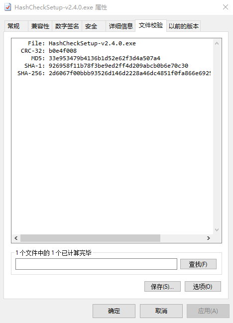
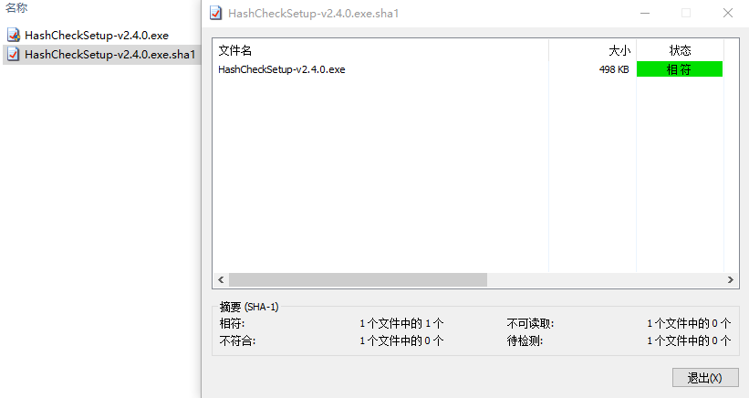
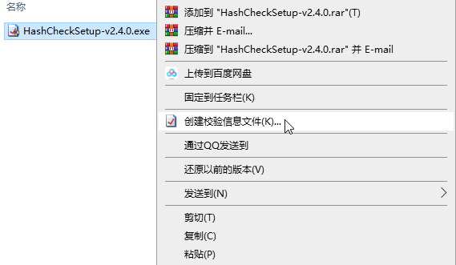

HashCheck 2.4.0
HashCheck，是一款适用于 Windows 操作系统的文件 hash 值校验工具，它快速高效，磁盘和内存占用非常少，并且是开源的。
关于 hash 值
Hash 值，即散列值、哈希值，有时也称为校验和，通常用一个短的随机字母和数字组成的字符串来代表。要解释 hash 值，还要从密码散列函数说起。
密码散列函数
密码散列函数（Cryptographic hash function），又叫加密散列函数，是适用于加密的散列函数。它是一种数学算法，可以将任意大小的数据（通常称为“消息”）映射到固定大小的位字符串（“散列值”，“散列”或“消息摘要”），并且是一个单向函数，即一个实际上不可逆转的函数。
理想的密码散列函数具有以下主要属性：
- 它是确定性的，即相同的消息总是产生相同的散列
- 可以快速计算任何给定消息的散列值
- 不能生成给散列值的消息
- 对于两条不同消息，不能具有相同散列值
- 对消息的一个小更改会极大地改变散列值，以使新的散列值与旧的散列值不相关(雪崩效应)
密码散列算法
有很多密码散列算法，相对频繁引用的算法有 CRC-32、MD5、SHA-1、SHA-256 等。
为什么要校验文件的 hash 值
基于密码散列函数的主要属性，校验文件 hash 值可以验证文件的完整性。比较传输之前和传输之后文件的 hash 值，若两者不一致，则文件可能损坏或者对文件进行了任何更改等。
HashCheck 的使用

HashCheck 将在文件属性对话框中添加“文件校验”选项卡，可以轻松地从 Windows 资源管理器中校验文件（甚至多个文件和目录）的 hash 值，还可以将结果保存到校验信息文件。

HashCheck 可以处理和验证存储在校验信息文件（checksum file，或叫校验和文件）中的 hash 值，这些文件的扩展名为 .sfv，.md4，.md5 或 .sha1 等。只需双击校验信息文件，HashCheck 就会根据校验信息文件中所列出文件的 hash 值来验证文件实际的 hash 值。

要创建校验信息文件，选择要为其创建校验信息文件的文件或目录，右键单击它们，然后选择“创建校验信息文件”。要更改所保存的 hash 算法，要先在文件属性对话框中用想要的 hash 算法保存一次。
下载
https://pan.baidu.com/s/1JEkpmOBur6xtR616PZ7HUQ
提取码：ue6m
许可协议：

本内容采用知识共享署名-非商业性使用 4.0 国际许可协议进行许可，转载请注明出处。